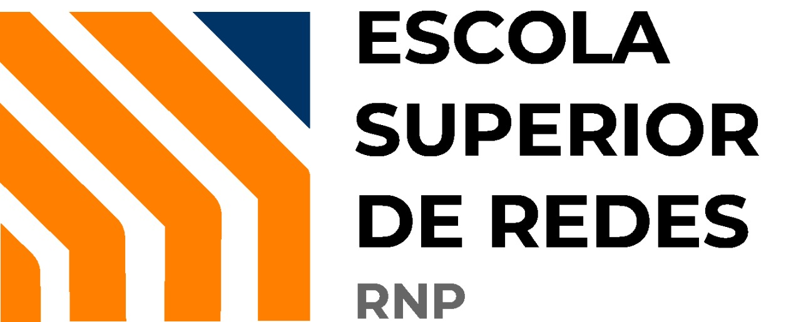

Sessão 5: Gestão do ciclo de vida de aplicações no Kubernetes
1) Configuração de aplicações
-
Antes de iniciar, execute o comando abaixo:
# lab-5.1.1
-
Temos um pod executando no sistema. Determine seu nome, bem como o comando utilizado em sua invocação.
Visualizar resposta
Bem, descobrir o nome do pod é bastante fácil:
# kubectl get pod NAME READY STATUS RESTARTS AGE sleeper 1/1 Running 0 2m36s
Já seu comando de invocação pode ser visto através de
kubectl get pod -o yamloukubectl describe; abaixo, iremos usar a segunda opção, buscando pela seçãoArgs:# kubectl describe pod sleeper | grep 'Args:' -A2 Args: sleep 3600O comando executado é, portanto,
sleep 3600. -
Crie um pod com o nome
sleeper-2, usando a mesma imagem do pod analisado no passo anterior. Adicionalmente, execute o comandosleep 7200em sua invocação.Dentro do novo pod criado, utilize o comando
pspara verificar o funcionamento de sua configuração.Visualizar resposta
Vamos verificar qual a imagem usada pelo pod
sleeper:# kubectl describe pod sleeper | grep 'Image:' Image: alpineCerto. Então, basta executar um pod usando as configurações especificadas, como se segue.
# kubectl run sleeper-2 --image=alpine -- sleep 7200 pod/sleeper-2 created
Vamos ver se o comando está de fato em execução com o comando
kubectl exec:# kubectl exec -it sleeper-2 -- ps auxmw PID USER TIME COMMAND 1 root 0:00 sleep 7200 6 root 0:00 ps auxmw -
Agora, crie o container
sleeper-3, desta vez utilizando a imagemfbscarel/myapp-color. Invoque o pod usando o comandosleep 10800.Utilize o comando
pspara verificar o funcionamento de sua configuração.Visualizar resposta
Diferentemente dos pods anteriores, que usavam a imagem
alpine(cujoENTRYPOINTé o shell/bin/sh), a imagemfbscarel/myapp-colorpossui o comandopython app.pycomoENTRYPOINT. Vimos isso na sessão 1, lembra-se?Assim, teremos que sobrescrever o
ENTRYPOINTdessa imagem; para tanto, basta especificar a flag--commandao comandokubectl run, como se segue:# kubectl run sleeper-3 --image=fbscarel/myapp-color --command -- sleep 10800 pod/sleeper-3 created
Vejamos o comando em operação:
# kubectl exec -it sleeper-3 -- ps auxmw PID USER TIME COMMAND 1 root 0:00 sleep 10800 6 root 0:00 ps auxmw -
Analise a definição YAML dos pods criados nos passos (c) e (d) e responda: qual a diferença entre eles? Que relação essas configurações possuem com as instruções
ENTRYPOINTeCMDem arquivosDockerfile?Visualizar resposta
Veja que no caso de pod
sleeper-2a seção que contém o comandosleepé aArgs— isso se deve ao fato de que estamos apenas fornecendo argumentos adicionais aoENTRYPOINTda imagem em uso,alpine. Isso equivale, para todos os efeitos, à instruçãoCMDem um arquivoDockerfile.# kubectl describe pod sleeper-2 | grep 'sleep$' -A1 -B1 Args: sleep 7200Já no caso do pod
sleeper-3, esseENTRYPOINTteve que ser sobrescrito. Note, abaixo, que a seção que contém o comandosleepé aCommand:# kubectl describe pod sleeper-3 | grep 'sleep$' -A1 -B1 Command: sleep 10800 -
Por padrão, a imagem
fbscarel/myapp-colormostra um fundo azul. Crie um novo pod, de nomemyapp-green, que mostra um fundo verde em seu lugar. Utilize o parâmetro de linha de comando--colorpara realizar essa configuração.Posteriormente, exponha o pod e visite a aplicação usando um navegador web em sua máquina física.
Visualizar resposta
Neste caso, não precisamos alterar o
ENTRYPOINTdo container, mas apenas fornecer argumentos ao comando padrão. Faremos isso através da entrada padrão com os caracters--:# kubectl run myapp-green --image=fbscarel/myapp-color -l app=myapp-green -- --color=green pod/myapp-green created
Para visualizar a aplicação usando um navegador web, iremos criar um serviço do tipo
NodePort:# kubectl create svc nodeport myapp-green --tcp=80 --node-port=30080 service/myapp-green created
E, finalmente, iremos visualizar a aplicação.
Figura 1. Aplicação publicada com a cor verde
2) Realizando updates e rollbacks
-
Remova os pods e serviços criados na atividade anterior com os comandos que se seguem.
# kubectl delete pod --all
# kubectl delete svc -l provider!=kubernetes
-
Crie um deployment com o nome
myapp, usando a imagemfbscarel/myapp-color:blue, com 4 réplicas. Exponha a porta 80 dessas réplicas dentro do contexto do cluster.Visualizar resposta
Bem, com o conhecimento que adquirimos até aqui é bastante fácil atingir esses objetivos, vamos lá. Primeiro, cria-se o deployment:
# kubectl create deploy myapp --image=fbscarel/myapp-color:blue --replicas=4 --port=80 deployment.apps/color created
A seguir, o serviço. Note que como ele deve ser exposto apenas no contexto do cluster, o tipo
ClusterIPé selecionado.# kubectl create svc clusterip myapp --tcp=80 service/color created
Vamos verificar se o serviço foi publicado como esperado:
# kubectl get svc myapp --no-headers color ClusterIP 10.105.177.171 <none> 80/TCP 50s
-
Crie um pod com o nome
curl, usando a imagemcurlimages/curl. Faça com que o pod se mantenha em estadoRunning— para tanto, substitua o ponto de entrada do container com um loop do comandosleep 60.Em seguida, utilizando os comandos
curlouwgete partindo do pod recém-criado, acesse a URL/colordo deployment realizado no passo anterior para verificar sua acessibilidade.Visualizar resposta
Criar o pod com a imagem e nome solicitados é fácil; por outro lado, como mantê-lo rodando? Vamos sobrescrever o
ENTRYPOINTdo container com um script shell simples, que execute um loop do comandosleep 60continuamente:# kubectl run curl --image=curlimages/curl --command -- /bin/sh -c 'while true; do sleep 60; done' pod/curl created
Agora que o pod está executando, podemos invocar comandos dentro dele. Iremos utilizar o
curlpara acessar a URL/colorda aplicação publicada no passo anterior, constatando que sua cor, no momento, é azul.# kubectl exec -it curl -- curl http://myapp/color Hostname: myapp-68b775f85-wdvll ; Color: blue
-
Vamos monitorar o estado do deployment. Em um terminal dedicado, execute o comando
curlouwgetinvocado no passo anterior em um loop infinito. Faça com que o tempo máximo de espera do comando (timeout) seja de 3 segundos.Sugestão: utilize um construto na forma
while true; do CURL-COMMAND; echo; sleep 1; done.Visualizar resposta
Para atingir esse objetivo basta editar o comando anterior, colocando-o dentro de um loop com a flag
-m3para ajustar o timeout docurl. Veja:# kubectl exec -it curl -- /bin/sh -c 'while true; do curl -m3 http://myapp/color; echo; sleep 1; done' Hostname: myapp-68b775f85-wdvll ; Color: blue Hostname: myapp-68b775f85-kmnll ; Color: blue Hostname: myapp-68b775f85-n6qwx ; Color: blue (...)
-
Determine a estratégia de atualização utilizada no deployment
myapp. Qual é o efeito dessa configuração, e qual o número máximo de pods inativos durante uma atualização?Visualizar resposta
O tipo de estratégia pode ser visualizada com o
kubectl describe deploy, como visto abaixo.# kubectl describe deploy myapp | grep StrategyType StrategyType: RollingUpdate
O tipo
RollingUpdatepossui configurações adicionais, visualizáveis no campoRollingUpdateStrategydesse mesmo comando.# kubectl describe deploy myapp | grep RollingUpdateStrategy RollingUpdateStrategy: 25% max unavailable, 25% max surge
Como visto acima, a estratégia está configurada para permitir no máximo 25% de pods indisponíveis. Como temos 4 pods no deployment, é fácil concluir que teremos no máximo 1 pod inativo durante uma atualização.
-
Atualize a imagem do deployment para
fbscarel/myapp-color:red. O que ocorre? Verifique o estado dos pods e o monitoramento criado no passo (c) para responder essa pergunta.Visualizar resposta
Vamos atualizar a imagem usando o comando
kubectl edit.# kubectl edit deploy myapp deployment.apps/myapp edited
Monitorando o estado do deployment, note que os pods são terminados à medida em que novos são criados.
# kubectl get pod -l app=myapp NAME READY STATUS RESTARTS AGE myapp-68b775f85-5g55l 1/1 Running 0 2m1s myapp-68b775f85-pfs2k 1/1 Running 0 2m1s myapp-68b775f85-qltcx 1/1 Terminating 0 2m1s myapp-68b775f85-zfw4g 1/1 Running 0 2m1s myapp-6955c4f744-5scz7 0/1 ContainerCreating 0 4s myapp-6955c4f744-8pqx9 0/1 ContainerCreating 0 4s
Como configurado, não há uma indisponibilidade total da aplicação em nenhum momento — o comando
curlconsegue atingir um pod do deployment mesmo durante a atualização.Hostname: myapp-68b775f85-pfs2k ; Color: blue Hostname: myapp-68b775f85-pfs2k ; Color: blue Hostname: myapp-68b775f85-zfw4g ; Color: blue Hostname: myapp-6955c4f744-5scz7 ; Color: red Hostname: myapp-6955c4f744-5scz7 ; Color: red Hostname: myapp-68b775f85-pfs2k ; Color: blue Hostname: myapp-6955c4f744-8pqx9 ; Color: red Hostname: myapp-6955c4f744-8pqx9 ; Color: red Hostname: myapp-6955c4f744-s6g66 ; Color: red
-
Altere a estratégia de atualização para
Recreate, e também altere a imagem do deployment parafbscarel/myapp:green. Qual o efeito dessa configuração na disponibilidade da aplicação?Visualizar resposta
Vamos editar o deployment novamente. Altere a imagem, e a seguir…
# kubectl edit deploy myapp deployment.apps/myapp edited
Na seção
.spec.strategy, altere o tipo de estratégia:strategy: type: RecreateE, ainda na seção
.spec.strategy, remova o blocorollingUpdate, que referencia especificamente o tipo de estratégiaRollingUpdate.rollingUpdate: maxSurge: 25% maxUnavailable: 25%Não se esqueça, ainda, de atualizar a imagem do deployment como indicado pelo enunciado. Note que a atualização do deployment começa imediatamente. Desta vez, os pods são todos encerrados:
# kubectl get pod -l app=myapp NAME READY STATUS RESTARTS AGE myapp-6955c4f744-5scz7 1/1 Terminating 0 2m23s myapp-6955c4f744-8pqx9 1/1 Terminating 0 2m23s myapp-6955c4f744-qvgxc 1/1 Terminating 0 2m17s myapp-6955c4f744-s6g66 1/1 Terminating 0 2m16s
E, após algum tempo, são recriados conjuntamente.
# kubectl get pod -l app=myapp NAME READY STATUS RESTARTS AGE myapp-665fd6ddbd-55fxs 1/1 Running 0 19s myapp-665fd6ddbd-5ktqr 1/1 Running 0 19s myapp-665fd6ddbd-6gp8s 1/1 Running 0 19s myapp-665fd6ddbd-vt9vh 1/1 Running 0 19s
Monitorando o comando
curl, perceba que a aplicação torna-se indisponível por algum tempo — enquanto os pods são recriados.Hostname: myapp-6955c4f744-5scz7 ; Color: red Hostname: myapp-6955c4f744-8pqx9 ; Color: red Hostname: myapp-6955c4f744-qvgxc ; Color: red Hostname: myapp-6955c4f744-5scz7 ; Color: red curl: (7) Failed to connect to myapp port 80 after 6 ms: Couldn't connect to server curl: (7) Failed to connect to myapp port 80 after 1026 ms: Couldn't connect to server (...) curl: (7) Failed to connect to myapp port 80 after 3 ms: Couldn't connect to server curl: (7) Failed to connect to myapp port 80 after 3 ms: Couldn't connect to server Hostname: myapp-665fd6ddbd-55fxs ; Color: green Hostname: myapp-665fd6ddbd-55fxs ; Color: green Hostname: myapp-665fd6ddbd-6gp8s ; Color: green Hostname: myapp-665fd6ddbd-vt9vh ; Color: green
3) Variáveis de ambiente e ConfigMaps
-
Remova os pods e serviços criados na atividade anterior com os comandos que se seguem.
# kubectl delete pod,rs,deploy --all
# kubectl delete svc -l provider!=kubernetes
-
Vamos configurar a aplicação
fbscarel/myapp-colorusando variáveis de ambiente. Lance um pod com o nomebobrossusando essa imagem, e ajustando a variável de ambienteCOLORcom o valorpurple.A seguir, exponha o pod na porta 31080 do node e utilize os comandos
curlouwgetpara consultar o caminho/colore verificar a cor da aplicação.Visualizar resposta
Podemos usar a flag
--envpara configurar variáveis de ambiente para o pod, como solicitado:# kubectl run bobross --image=fbscarel/myapp-color -l app=bobross --env="COLOR=purple" pod/bobross created
A seguir, exporemos o pod com um serviço do tipo
NodePort, como solicitado.# kubectl create svc nodeport bobross --tcp=80 --node-port=31080 service/bobross created
E, finalmente, iremos consultar a cor atual da aplicação via
curl:# curl http://localhost:31080/color Hostname: bobross ; Color: purple
-
Vamos alterar a cor da aplicação para amarelo. Primeiro, tente editar o pod; é possível?
Visualizar resposta
Vamos ver:
# kubectl edit pod bobross
Ao alterar a variável de ambiente, encontramos um erro. Não é possível editá-lo on-the-fly, portanto; teremos que recriar o pod.
# pods "bobross" was not valid: # * spec: Forbidden: pod updates may not change fields other than `spec.containers[*].image`, `spec.initContainers[*].image`, `spec.activeDeadlineSeconds` or `spec.tolerations` (only additions to existing tolerations),`spec.terminationGracePeriodSeconds` (allow it to be set to 1 if it was previously negative)
-
Alternativamente, exporte o pod em formato YAML, faça as alterações necessárias e recrie a aplicação. Qual é a seção que define as variáveis de ambiente do pod?
Verifique, ainda, que a alteração de cor surtiu o efeito esperado.
Visualizar resposta
Podemos fazer todos os passos com um one-liner, como se segue. Note o uso do comando
sedpara alterar a variável de ambiente que define a cor de fundo da aplicação.# kubectl get pod bobross -o yaml > bobross.yaml ; sed -i 's/purple/yellow/' bobross.yaml ; kubectl delete pod bobross ; kubectl create -f bobross.yaml pod "bobross" deleted pod/bobross created
A variável de ambiente é definida na seção
.spec.containers.env, como visto com o comandogrepabaixo:# grep yellow bobross.yaml -B4 spec: containers: - env: - name: COLOR value: yellowVejamos se a aplicação mudou de cor, de fato:
# curl http://localhost:31080/color Hostname: bobross ; Color: yellow
-
Vamos alterar o formato através do qual essas variáveis de ambiente são definidas — usando ConfigMaps. Crie um ConfigMap com o nome
cm-bobrossvia arquivo YAML, definindo a variávelCOLORcom o valorpink.Em seguida, delete o pod
bobrosse recrie-o, desta vez definindo a variável de ambienteCOLORusando o ConfigMapcm-bobross. Teste o funcionamento de sua configuração.Visualizar resposta
Para criar o ConfigMap, basta editar o arquivo YAML com o conteúdo abaixo:
1 2 3 4 5 6
apiVersion: v1 kind: ConfigMap metadata: name: cm-bobross data: COLOR: pink
Vamos criá-lo via
kubectl create:# kubectl create -f cm-bobross.yaml configmap/cm-bobross created
E verificar que seu conteúdo é, de fato, o que esperamos. Note que podemos usar
kubectl describe cm(em lugar da forma longakubectl describe configmaps) para economizar tempo.# kubectl describe cm cm-bobross Name: cm-bobross Namespace: default Labels: <none> Annotations: <none> Data === COLOR: --- pink BinaryData === Events: <none>
Para fazer com que o pod utilize o ConfigMap, iremos criá-lo usando um arquivo YAML, com o conteúdo abaixo:
1 2 3 4 5 6 7 8 9 10 11 12 13 14 15 16
apiVersion: v1 kind: Pod metadata: labels: app: bobross name: bobross spec: containers: - image: fbscarel/myapp-color name: bobross env: - name: COLOR valueFrom: configMapKeyRef: name: cm-bobross key: COLOR
A seguir, criamos o pod:
# kubectl delete pod bobross ; kubectl create -f bobross.yaml pod/bobross created
E verificamos que a cor da aplicação foi de fato alterada:
# curl http://localhost:31080/color Hostname: bobross ; Color: pink
-
Agora, vamos utilizar ConfigMaps de uma forma mais complexa. Realize as tarefas que se seguem:
-
Crie um pod com o nome
daytona-db, usando a imagemmysql:5.6e defina a senha do usuáriorootcomo sendobeach. Publique os serviços da porta 3306 deste pod dentro do contexto do cluster. -
Crie o ConfigMap
daytona-cmque ajuste as variáveisDBHOST,DBUSEReDBPASSde acordo com os parâmetros do pod criado no passo anterior. Não utilize um arquivo YAML neste passo. -
Crie e publique na porta 32080 dos nodes os serviços do pod
daytona-app, usando a imagemfbscarel/myapp-mysql. Faça com que esse pod carrege todas as suas variáveis de ambiente a paritr do ConfigMap criado no passo anterior. -
Acesse a interface da aplicação usando um navegador web em sua máquina física e verifique o funcionamento de sua configuração.
Visualizar resposta
Vamos lá: primeiro, criamos o pod
daytona-dbcom as configurações solicitadas:# kubectl run daytona-db --image="mysql:5.6" --env="MYSQL_ROOT_PASSWORD=beach" --port=3306 --expose service/daytona-db created pod/daytona-db created
Para criar o ConfigMap devemos usar o comando
kubectl create cm. Como o enunciado solicita que não seja usado um arquivo YAML para este fim, iremos utilizar a opção--from-literalpara passar pares chave-valor diretamente a partir da linha de comando.# kubectl create cm daytona-cm --from-literal="DBHOST=daytona-db" --from-literal="DBUSER=root" --from-literal="DBPASS=beach" configmap/daytona-cm created
Vamos ver se funcionou:
# kubectl describe cm daytona-cm Name: daytona-cm Namespace: default Labels: <none> Annotations: <none> Data === DBHOST: ---- daytona-db DBPASS: ---- beach DBUSER: ---- root Events: <none>
Perfeito. Agora, vamos criar o arquivo YAML do pod
daytona-app. Note que, ao invés de informar quais variáveis devem ser carregadas a partir do ConfigMap, uma a uma, podemos utilizar a diretivaenvFrompara carregar todas as variáveis disponíveis no ConfigMap.1 2 3 4 5 6 7 8 9 10 11 12 13
apiVersion: v1 kind: Pod metadata: labels: app: daytona-app name: daytona-app spec: containers: - image: fbscarel/myapp-mysql name: daytona-app envFrom: - configMapRef: name: daytona-cm
Vamos criar o pod:
# kubectl create -f daytona-app.yaml pod/daytona-app created
E em seguida, o serviço do tipo
NodePortque irá publicá-lo:# kubectl create svc nodeport daytona-app --tcp=80 --node-port=32080 service/daytona-app created
Finalmente, vamos testar o funcionamento de nossa configuração via navegador web, na máquina física.
Figura 2. Conexão ao banco de dados ajustada via ConfigMap -
4) Segredos (Secrets) em aplicações
-
Quantos Secrets existem no namespace default, no momento?
Visualizar resposta
É bastante fácil obter essa informação com o comando
kubectl get secrets. Veja:# kubectl get secrets --no-headers | wc -l No resources found in default namespace. 0
-
Um grave problema com a configuração da aplicação
daytona-apprealizada na atividade anterior é que tanto o usuário quanto a senha de acesso ao banco de dados, ambas informações sensíveis, estão armazenadas em um ConfigMap sem qualquer segurança. Para solucionar isso, iremos mover essas duas variáveis para um Secret.Primeiro, crie um arquivo YAML definindo o secret
daytona-secret-yaml, com as variáveisDBUSEReDBPASS. Os valores dessas variáveis devem ser os mesmos utilizados anteriormente.A seguir, crie um secret via
kubectlcom o nomedaytona-secret-kubectl, com as mesmas variáveis e valores.Finalmente, compare ambos e verifique que são, de fato, idênticos.
Visualizar resposta
Para criar um Secret via arquivo YAML, devemos primeiramente obter os valores dos segredos em formato base64. Isso pode ser feito trivialmente, usando os comandos que se seguem:
# echo -n 'root' | base64 cm9vdA==
# echo -n 'beach' | base64 YmVhY2g=
Feito isso, criamos o arquivo YAML descrevendo o Secret.
1 2 3 4 5 6 7
apiVersion: v1 kind: Secret metadata: name: daytona-secret-yaml data: DBPASS: YmVhY2g= DBUSER: cm9vdA==
E o criamos via
kubectl create:# kubectl create -f daytona-secret-yaml.yaml secret/daytona-secret-yaml created
Vamos fazer o mesmo procedimento, agora via linha de comando. Assim como no caso de ConfigMaps, podemos usar a opção
--from-literalpara informar os pares chave-valor diretamente no comando sendo executado. Atente-se para o fato de que essas informações poderão constar no histórico de comandos do usuário e nos logs do sistema, dependendo da configuração do ambiente — isso pode ser considerada uma exposição de informação sensível.# kubectl create secret generic daytona-secret-kubectl --from-literal="DBUSER=root" --from-literal="DBPASS=beach" secret/daytona-secret-kubectl created
Utilizando o comando
diff, iremos agora comparar os dois Secrets criados, via arquivo YAML e via linha de comando. Note que os campos diferentes em ambos os objetos são apenas seus nomes e detalhes de status, como data de criação e versionamento do recurso. Para todos os efeitos, ambos são idênticos.# diff <(kubectl get secret daytona-secret-yaml -o=yaml) <(kubectl get secret daytona-secret-kubectl -o=yaml) 7,8c7,8 < creationTimestamp: "2023-05-05T01:57:24Z" < name: daytona-secret-yaml --- > creationTimestamp: "2023-05-05T01:57:30Z" > name: daytona-secret-kubectl 10,11c10,11 < resourceVersion: "24144" < uid: 2cf72b70-319a-4995-b6f9-b3c4eea342cb --- > resourceVersion: "24151" > uid: 5e431eff-c29d-4cd4-8b09-52b56f7d2ef5
-
Ajuste a aplicação
daytona-apppara que os valores das variáveisDBUSEReDBPASSsejam obtidos a partir de um dos secrets criados no passo anterior.Mantenha a variável
DBHOSTsendo definida a partir do ConfigMapdaytona-cm. Adicionalmente, edite esse ConfigMap e remova as variáveis sensíveis.Verifique que a aplicação mantém-se funcional após seus ajustes.
Visualizar resposta
Vamos editar o arquivo YAML da aplicação
daytona-app— iremos puxar todas as variáveis de ambiente do secretdaytona-secret-yaml(poderia ser o outro, criado no passo anterior, sem qualquer prejuízo), e apenas a variávelDB_HOSTa partir do ConfigMapdaytona-cm.1 2 3 4 5 6 7 8 9 10 11 12 13 14 15 16 17 18 19
apiVersion: v1 kind: Pod metadata: labels: app: daytona-app name: daytona-app spec: containers: - image: fbscarel/myapp-mysql name: daytona-app env: - name: DBHOST valueFrom: configMapKeyRef: name: daytona-cm key: DBHOST envFrom: - secretRef: name: daytona-secret-yaml
Agora, iremos remover as variáveis sensíveis do ConfigMap.
# kubectl edit cm daytona-cm configmap/daytona-cm edited
E verificar que foram, de fato, removidas.
# kubectl describe cm daytona-cm Name: daytona-cm Namespace: default Labels: <none> Annotations: <none> Data === DBHOST: --- daytona-db BinaryData === Events: <none>
Finalmente, recriamos o pod
daytona-appcom o arquivo YAML atualizado.# kubectl delete pod daytona-app ; kubectl create -f daytona-app.yaml pod "daytona-app" deleted pod/daytona-app created
Via navegador, constatamos que a aplicação permanece funcional, como esperado.
Figura 3. Configuração de usuário/senha definida via Secret
5) Multi-container Pods e Init Containers
5.1) Multi-container Pods
-
Antes de iniciar, execute o comando abaixo:
# lab-5.5.1
-
Quantos containers existem dentro do pod
flintstones?Visualizar resposta
Podemos determinar essa informação de diversas formas — por exemplo, contando o número de
Container IDsdo pod:# kubectl describe pod flintstones | grep 'Container ID:' | wc -l 3
-
Qual é a imagem utilizada em cada um desses containers?
Visualizar resposta
Vejamos:
# kubectl describe pod flintstones | grep 'Image:' Image: nginx:alpine Image: redis:alpine Image: httpd:alpine -
Qual o estado do pod
flintstones? Por que motivo o(s) container(s) não estão sendo iniciados?Visualizar resposta
O pod não está em operação, apenas 2/3 containers foram executados com sucesso. Investigando o estado deles, fica claro que o container
barneyestá tendo problemas:# kubectl describe pod flintstones | grep 'barney:' -A8 barney: Container ID: docker://e1ba1c1588108c555126f7f49bb297826ef2e0a4f5e52f5bb121122c1587abc4 Image: httpd:alpine Image ID: docker-pullable://httpd@sha256:d27f57dcfaf89612b95e5aedbe628feb3d358bac08f046585f287c4e31acfc87 Port: <none> Host Port: <none> State: Waiting Reason: CrashLoopBackOff Last State: TerminatedInvestigando os logs do mesmo, fica claro o motivo: ele não consegue escutar na porta 80, que já foi reservada pelo container que utiliza a imagem
nginx:alpine.# kubectl logs flintstones barney AH00558: httpd: Could not reliably determine the server's fully qualified domain name, using 10.44.0.3. Set the 'ServerName' directive globally to suppress this message (98)Address in use: AH00072: make_sock: could not bind to address 0.0.0.0:80 no listening sockets available, shutting down AH00015: Unable to open logs
-
Crie um pod com o nome
jetsons. Dentro dele, crie dois containers, um com o nomegeorgee imagembusybox, rodando o comandosleep 600; o outro container deve se chamarjane, com a imagemnginx:alpine.Visualizar resposta
Vamos criar um arquivo YAML obedecendo às especificações informadas no enunciado:
1 2 3 4 5 6 7 8 9 10 11 12 13 14 15
apiVersion: v1 kind: Pod metadata: labels: run: jetsons name: jetsons spec: containers: - image: busybox name: george args: - sleep - "600" - image: nginx:alpine name: jane
A seguir, criamos o pod:
# kubectl create -f jetsons.yaml pod/jetsons created
E verificamos seu estado — note que ambos os containers estão operacionais, como objetivado.
# kubectl get pod jetsons NAME READY STATUS RESTARTS AGE jetsons 2/2 Running 0 3m45s
5.2) Init Containers
-
Antes de iniciar, execute o comando abaixo:
# lab-5.5.2
-
Qual dos pods criados possui um initContainer configurado?
Visualizar resposta
Podemos visualizar as configurações de cada pod em detalhe via
kubectl describe pod… ou, de forma mais direta, podemos buscar quais pods possuem a seção.spec.initContainers:# kubectl get pod -o custom-columns=NAME:.metadata.name,INITCONTAINERS:.spec.initContainers[*].name NAME INITCONTAINERS scoobydoo <none> wackyraces muttley woodpecker <none>
Veja que apenas o pod
wackyracespossui um initContainer, de nomemuttley. -
Qual é a imagem utilizada pelo initContainer nesse pod?
Visualizar resposta
Vejamos:
# kubectl get pod wackyraces -o jsonpath='{.spec.initContainers[*].image}' alpine -
Qual é o estado desse initContainer? Por que razão?
Visualizar resposta
Ambas as informações figuram dentro do comando
kubectl describe pod. Vamos selecionar as seções específicas viagrep:# kubectl describe pod wackyraces | grep 'muttley:' -A10 | grep 'State:' State: Terminated# kubectl describe pod wackyraces | grep 'muttley:' -A10 | grep 'Reason:' Reason: Completed -
Crie o pod
looneycom dois initContainers,bugsedaffy, ambos usando a imagembusyboxe executando, respectivamente, os comandossleep 600esleep 1200. A seguir, inclua um container de nomeelmercom a imagemfbscarel/myapp-color.A seguir, responda:
-
Qual é o estado do pod, após sua criação?
-
Após quanto tempo o pod está pronto para atender requisições de clientes?
Visualizar resposta
Vamos primeiramente criar o arquivo YAML segundo as especificações:
1 2 3 4 5 6 7 8 9 10 11 12 13 14 15 16 17 18 19 20 21
apiVersion: v1 kind: Pod metadata: labels: app: looney name: looney spec: initContainers: - image: busybox name: bugs args: - sleep - "600" - image: busybox name: daffy args: - sleep - "1200" containers: - image: fbscarel/myapp-color name: elmer
A seguir, criamos o pod:
# kubectl create -f looney.yaml pod/looney created
E verificamos seu estado. Note que ele se encontra como
Init:0/2.# kubectl get pod looney NAME READY STATUS RESTARTS AGE looney 0/1 Init:0/2 0 14s
Os initContainers são inicializados sequencialmente, um por vez. Portanto, temos que primeiro será executado o initContainer
bugs, concluído após 600 segundos, e posteriormente o initContainerdaffy, concluído após 1200 segundos. Só então o containerelmerserá executado — portanto, 600 + 1200 = 1800 segundos, ou 30 minutos. -
-
Altere a configuração do pod de forma que o tempo total de espera até que a aplicação torne-se disponível seja de 30 segundos. Publique um serviço para viabilizar acesso à aplicação e teste seu funcionamento.
Visualizar resposta
Vamos alterar ambos os tempos dos initContainers
bugsedaffypara 15 segundos cada, viased. A seguir, deletamos e recriamos o pod. Veja:# sed -i 's/[1]*[2,6]00/15/' looney.yaml ; kubectl delete pod looney ; kubectl create -f looney.yaml pod "looney" deleted pod/looney created
Após 30 segundos, o pod está ativo.
# kubectl get pod looney NAME READY STATUS RESTARTS AGE looney 1/1 Running 0 101s
Vamos visualizar o estado dos initContainers — note que ambos estão registrados como
Completed.# kubectl get pod looney -o custom-columns=NAME:.spec.initContainers[*].name,STATUS:.status.initContainerStatuses[*].state.terminated.reason NAME STATUS bugs,daffy Completed,Completed
Crie o serviço do tipo
NodePortpara acessar o container…# kubectl create svc nodeport looney --tcp=80 --node-port=32180 service/looney created
E valide seu funcionamento via
curl.# curl http://localhost:32180/color Hostname: looney ; Color: blue
6) Escalabilidade automática de aplicações
-
Remova os pods e serviços criados na atividade anterior com os comandos que se seguem.
# kubectl delete pod,rs,deploy --all
# kubectl delete svc -l provider!=kubernetes
-
Crie um deployment com o nome
php-hpa, usando a imagemfbscarel/php-sqrte apenas uma réplica. Imponha um requerimento de uso de CPU de 100 milliCPU e limite de 200 mCPU.Visualizar resposta
Vamos criar o deployment via arquivo YAML, já que queremos estabelecer limites de recursos. Use a configuração abaixo.
1 2 3 4 5 6 7 8 9 10 11 12 13 14 15 16 17 18 19 20 21 22
apiVersion: apps/v1 kind: Deployment metadata: name: php-hpa spec: selector: matchLabels: app: php-hpa replicas: 1 template: metadata: labels: app: php-hpa spec: containers: - name: php-hpa image: fbscarel/php-sqrt resources: limits: cpu: 200m requests: cpu: 100m
A seguir, criamos o deployment via
kubectl apply.# kubectl apply -f php-hpa.yaml deployment.apps/php-hpa created
-
Exponha a porta 80 dos pods do deployment criado no passo anterior dentro do contexto do cluster.
Visualizar resposta
Bem fácil, não é mesmo?
# kubectl create svc clusterip php-hpa --tcp=80 service/php-hpa created
-
Crie uma configuração de escalabilidade automática para o deployment usando o comando
kubectl autoscale. Faça com que o Horizontal Pod Autoscaler mantenha entre 1 e 5 cópias dos pods do deploymentphp-hpa, objetivando um uso de 50% de CPU entre esses pods.Feito isso, visualize o estado atual do HPA e valide o funcionamento de sua configuração.
Visualizar resposta
Vamos lá: felizmente, o comando
kubectl autoscaleé bastante auto-explicativo, e fica claro como converter as instruções do enunciado para parâmetros de linha de comando.# kubectl autoscale deploy php-hpa --cpu-percent=50 --min=1 --max=5 horizontalpodautoscaler.autoscaling/php-hpa autoscaled
Terá funcionado? Vamos consultar o estado via
kubectl get hpa:# kubectl get hpa NAME REFERENCE TARGETS MINPODS MAXPODS REPLICAS AGE php-hpa Deployment/php-hpa 1%/50% 1 5 1 81s
-
Utilizando a imagem
busyboxe o comandowget, crie o podload-generatorque executa um script simples com requisições constantes à aplicação criada nos passos anteriores, gerando carga para a mesma.Visualizar resposta
Vamos utilizar um loop, como fizemos antes. Note que, como ambos os pods estão dentro do mesmo namespace, podemos utilizar o nome curto do alvo:
# kubectl run load-generator --image=busybox -- /bin/sh -c 'while true; do wget -q -O- http://php-hpa; done' pod/load-generator created
-
Monitore a evolução do Horizontal Pod Autoscaler e do deployment, visualizando o crescimento da carga demandada, bem como do número de réplicas criadas.
Visualizar resposta
Execute o comando
kubectl get hpaperiodicamente. Note que o número de réplicas vai subindo gradativamente para atender à carga aumentada: primeiro, temos 3 réplicas…# kubectl get hpa NAME REFERENCE TARGETS MINPODS MAXPODS REPLICAS AGE php-hpa Deployment/php-hpa 191%/50% 1 5 3 10m
Chegando a 4:
# kubectl get hpa NAME REFERENCE TARGETS MINPODS MAXPODS REPLICAS AGE php-hpa Deployment/php-hpa 92%/50% 1 5 4 10m
Do lado do deployment, o mesmo tipo de informação pode ser visualizada.
# kubectl get deploy php-hpa NAME READY UP-TO-DATE AVAILABLE AGE php-hpa 4/4 4 4 14m
Após algum tempo, o Horizontal Pod Autoscaler atinge seu limite de escalabilidade, levando o deployment a 5 réplicas.
# kubectl get hpa NAME REFERENCE TARGETS MINPODS MAXPODS REPLICAS AGE php-hpa Deployment/php-hpa 46%/50% 1 5 5 63m
-
Encerre o pod
load-generator, reduzindo a carga do Horizontal Pod Autoscaler. Acompanhe seu estado, bem como do deployment, e veja o que ocorre com o número de réplicas ativas.Visualizar resposta
Vamos deletar o pod:
# kubectl delete pod load-generator pod "load-generator" deleted
Para facilitar o monitoramento, iremos criar um loop que, de 10 em 10 segundos, irá mostrar o estado do HPA e do deployment na tela:
# while true; do k get hpa; k get deploy php-hpa; echo '---'; sleep 10; done NAME REFERENCE TARGETS MINPODS MAXPODS REPLICAS AGE php-hpa Deployment/php-hpa 51%/50% 1 5 5 75m NAME READY UP-TO-DATE AVAILABLE AGE php-hpa 5/5 5 5 79m --- NAME REFERENCE TARGETS MINPODS MAXPODS REPLICAS AGE php-hpa Deployment/php-hpa 15%/50% 1 5 5 76m NAME READY UP-TO-DATE AVAILABLE AGE php-hpa 5/5 5 5 79m --- NAME REFERENCE TARGETS MINPODS MAXPODS REPLICAS AGE php-hpa Deployment/php-hpa 1%/50% 1 5 5 76m NAME READY UP-TO-DATE AVAILABLE AGE php-hpa 5/5 5 5 79m (...) NAME REFERENCE TARGETS MINPODS MAXPODS REPLICAS AGE php-hpa Deployment/php-hpa 1%/50% 1 5 5 81m NAME READY UP-TO-DATE AVAILABLE AGE php-hpa 2/2 2 2 84m --- NAME REFERENCE TARGETS MINPODS MAXPODS REPLICAS AGE php-hpa Deployment/php-hpa 1%/50% 1 5 2 81m NAME READY UP-TO-DATE AVAILABLE AGE php-hpa 1/1 1 1 84m --- NAME REFERENCE TARGETS MINPODS MAXPODS REPLICAS AGE php-hpa Deployment/php-hpa 1%/50% 1 5 1 81m NAME READY UP-TO-DATE AVAILABLE AGE php-hpa 1/1 1 1 85m
Observe que a carga vai diminuindo rapidamente, até chegar a 1% de CPU. Após alguns minutos, o HPA vai reduzindo o número de réplicas do deployment, indo do número máximo de 5 até o mínimo, 1 réplica.
|
ENTREGA DA TAREFA Para que seja considerada entregue você deve anexar a esta atividade no AVA uma imagem (nos formatos .png ou .jpg) do terminal mostrando o crescimento do número de réplicas do Horizontal Pod Autoscaler Utilize como referência a saída de comando mostrada na atividade 5.6 (f) deste roteiro. |